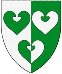

Antavla
31937675 Kirsten Most (Andersdotter) Kyrning af Vidtskövle

Far:
Anders Nilsson Kyrning (Porse) (1270? - >1333)
Född:
1289 Löddeköpinge (M).
[1]
Död:
Sverige.
Barn med
31937674 Aage Tordsen Thott (1287 - )
Barn:
Julianne Aagesdatter Thott (1315? - )
Personhistoria
Årtal
Ålder
Händelse
1289
Födelse 1289 Löddeköpinge (M)
[1]
1315?
Dottern
15968837 Julianne Aagesdatter Thott
föds omkring 1315
>1333
Fadern
63875350 Anders Nilsson Kyrning (Porse)
dör efter 1333
1335?
Barnbarnet
7984418 Anders Nielsen (Hollunger) Gagge
föds omkring 1335
[2]
Källor
[1]
wikitree
[2]
Marie-Louice Larsson